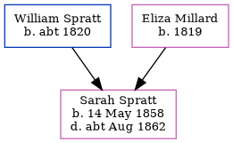

Sarah Jane Spratt 1858 - c1862
[ Home ] | [ Calendar ] | [ Surnames Index ] | [ Errors ] | [ Family History ]The child of William Spratt (a police man) and Eliza Millard, Sarah Spratt, the first cousin three-times-removed on the father's side of Nigel Horne, was born in Marylebone, London, England on 14 May 1858 and baptised there on 20 Jun 1858. On 7 Apr 1861, she was living at Little Chesterfield Street in Marylebone2.
She died c. Aug 1862 in Marylebone1.
Parents
- William was born c. 1820
- Eliza was born in 1819
Citations
- England & Wales deaths 1837-2007 - Findmypast
- 1861 England, Wales & Scotland Census - Findmypast (was age 3 and the daughter of the head of the household)
Media
England Births & Baptisms 1538-1975 - R_948865404
England & Wales deaths 1837-2007 - BMD/D/1862/3/GU/001258/017
Family Tree
Map
Generated by ged2site. Last updated on Jul 3, 2024
Known Issues
Birth date (14 May 1858) has no citations